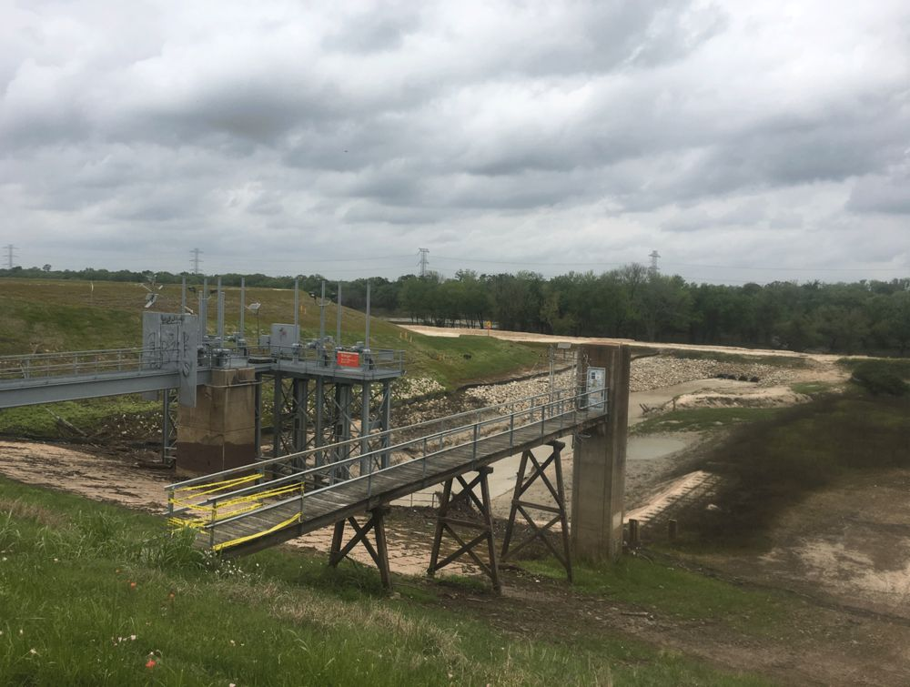

Houston, Texas / Hurricane Harvey
Buffalo Bayou at Piney Point
USGS field photograph · August 27, 2017 at 10:45 a.m. CDT

AI photo reading
NVIDIA Nemotron
Surface water
—Proposed depth
—Visual evidence
Loading the recorded reading…
- Depth reference
- —
- Model confidence
- —
- Object detector
- —
Addicks Reservoir
USGS photographed the same structure during Harvey and eight months later. Image source ↗


USGS public-domain photographs. Both sites are outside the Meyerland replay area.